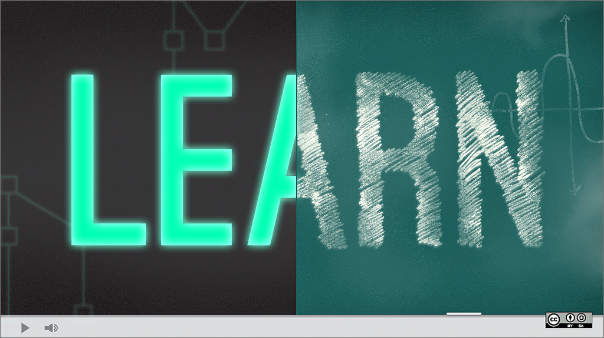
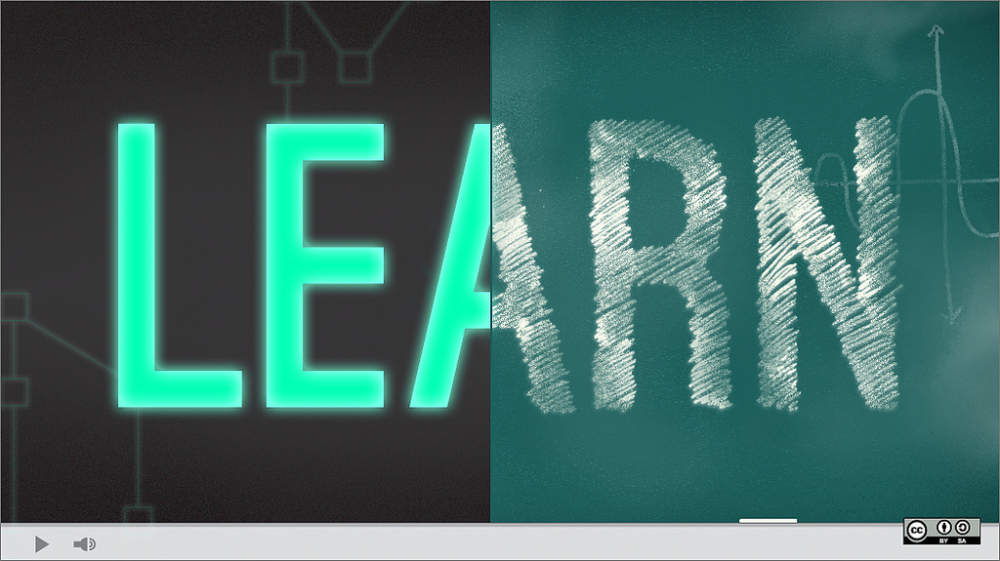

Nubu The King
Who is Nubu the King
 

Hi, my name is Nubu The King. Very curiouse and world wonder creature. I'm well traveled and educated
individual. Have experience in variaty of jobs and professions.
I've worked as a barman and in browery as a instoller of pumps to pour a beer, I've been a teacher,
swimming instructor and physioterapist. I dirty ma hands on building site as a labour and have been
selling suits in shopping centre.
I experiance sharpness of mind of university students and obtuseness of those who don't appreciate
knowladge.
Visiting places, exploring cities, talking to people gave me a brief view and idea how various and
divers world could be.
It is fascinating to know that diference doesn't mean less valuable. I don't like != that bad.
My interest in technology and coding
My first computer/laptop I got when I was 34. I remeber exactly, tah was TOSHIBA with 32Gb of HDD. What a
joyful day that was.
I was happy like a child over Xmas. Didn't take very long when I realise technology is progressing with
a "speed of light" and soon my mobile phone had much more memory and been working faster then computer.
That was a moment when started seriously thimk about changing industry and profession. At the moment, we
have March 2019 I'm half way down to get apprenticeship in coding/software development in well known
company.
Adventure with Code Nation
Only way to make my transition from one industry to another possible was to get scholarship. Where I'll
be paid from a day one.
Code Nation is a place where dream could come true. Unusual approach to teaching and to business itself
allowes those in similar sytuation to mine, have a chance to completely transformate their lives.
Here in CN dreams come true.
HERE IS A FEW THINKS I WANTED TO SHARE WITH YOU
The purpose of an IT in modern business
Information technology (IT) has become a vital and integral part of every business plan. From
multi-national corporations who maintain mainframe systems and databases to small businesses
that own a single computer, IT plays a role. The reasons for the omnipresent use of computer
technology in business can best be determined by looking at how it is being used across the
business world.
Communication Between Employees, Suppliers and Customers
For many companies, email is the principal means of communication between employees, suppliers
and customers. Email was one of the early drivers of the Internet, providing a simple and
inexpensive means to communicate. Over the years, a number of other communications tools have
also evolved, allowing staff to communicate using live chat systems, online meeting tools and
video-conferencing systems. Voice over internet protocol (VOIP) telephones and smart-phones
offer even more high-tech ways for employees to communicate.
Inventory Management Systems
When it comes to managing inventory, organizations need to maintain enough stock to meet demand
without investing in more than they require. Inventory management systems track the quantity of
each item a company maintains, triggering an order of additional stock when the quantities fall
below a pre-determined amount. These systems are best used when the inventory management system
is connected to the point-of-sale (POS) system. The POS system ensures that each time an item is
sold, one of that item is removed from the inventory count, creating a closed information loop
between all departments.
Data Management Systems
The days of large file rooms, rows of filing cabinets and the mailing of documents is fading
fast. Today, most companies store digital versions of documents on servers and storage devices.
These documents become instantly available to everyone in the company, regardless of their
geographical location. Companies are able to store and maintain a tremendous amount of
historical data economically, and employees benefit from immediate access to the documents they
need.
Management Information Systems
Storing data is only a benefit if that data can be used effectively. Progressive companies use
that data as part of their strategic planning process as well as the tactical execution of that
strategy. Management Information Systems (MIS) enable companies to track sales data, expenses
and productivity levels. The information can be used to track profitability over time, maximize
return on investment and identify areas of improvement.
Managers can track sales on a daily basis, allowing them to immediately react to
lower-than-expected numbers by boosting employee productivity or reducing the cost of an item.
Customer Relationship Management
Companies are using IT to improve the way they design and manage customer relationships.
Customer Relationship Management (CRM) systems capture every interaction a company has with a
customer, so that a more enriching experience is possible. If a customer calls a call center
with an issue, the customer support representative will be able to see what the customer has
purchased, view shipping information, call up the training manual for that item and effectively
respond to the issue.
The entire interaction is stored in the CRM system, ready to be recalled if the customer calls
again. The customer has a better, more focused experience and the company benefits from improved
productivity.
Methods, skills and resources needed to complete digital project
However, here are some skills you might see listed in the job requirements for a digital
project manager:
- Collaborative.
- Strong communication skills.
- Problem solver.
- Attention to detail.
- Strong organizational skills.
- Ability to multi-task and prioritize.
- Goal- and results-driven.
- Get things done.
-
Planning and carrying task using IT
Forcast
Presentation
-
Risk that might impact digital projects
Slide
Presentation
-
Selecting and using correct IT systems and software
- Software Overview
-
Computer hardware is virtually useless without computer software. Software is the
programs that are needed to accomplish the input, processing, output, storage, and
control activities of information systems.
Computer software is typically classified into two major types of programs: system
software and application software.
System Software
Systems software are programs that manage the resources of the computer system and
simplify applications programming. They include software such as the operating system,
database management systems, networking software, translators, and software utilities.
- Application Software
Application software are programs that direct the performance of a particular use, or
application, of computers to meet the information processing needs of end users. They
include Aoff-the-shelf@ software such as word processing and spreadsheet packages, as
well as internally or externally developed software that is designed to meet the
specific needs of an organization.
Software trends have been away from custom-designed one-of-kind programs developed by
the professional programmers or end users of an organization toward the use of
Aoff-the-shelf@ software packages acquired by end users from software vendors.
- Two types of packages are available:
1. Vertical packages - assist users within a specific industry segment. Examples include
packages that help to manage construction projects, keep track of inventory of
hospitals, or fast-food outlets.
2. Horizontal packages - can perform a certain general function, such as accounting, or
office automation, for a range of businesses.
Relationships between Hardware and Software Components
- Operating Systems
The most important system software package for any computer is its operating system.
Every computer system runs under the control of an operating system. Operating systems
for computers that are shared by many users are considerably more complex than operating
systems for personal computers.
- What Does an Operating System Do?
The operating system is the software that controls all the resources of a computer
system. For example it:
1. Assigns the needed hardware to programs
2. Schedules programs for execution on the processor
3. Allocates the memory required for each program
4. Assigns the necessary input and output devices
5. Manages the data and program files stored in secondary storage
6. Maintains file directories and provides access to the data in the files
7. Interacts with the users
Multiprogramming is the capacity of a computer to executing several programs
concurrently on the same processor by having one of the programs using the processor
while others are performing input or output.
Multiprogramming requires that the active parts of the programs competing for the
processor be available in main memory. Virtual memory is the seemingly expanded capacity
of the main memory of the computer, and achieved by keeping in the main memory only the
immediately needed parts of programs, with the complete programs kept in secondary
storage.
- Modes of Computer System Operation
Operating systems enable the system they manage to operate in various modes. These
include batch processing, time sharing, and real-time processing.
Batch processing Processing programs or transactions in batches, without a user's
interaction.
Time Sharing Systems providing interactive processing by allocating a short time slice
for the use of the server to each user in turn.
Real-time Processing Systems that respond to an event within a fixed time interval; used
for example, in manufacturing plants or to collect data from several pieces of equipment
in a laboratory.
With the move toward multiprocessors, in which several (or even many) processors are
configured in a single computer system, multiprocessing operating systems have been
designed to allocate the work to the multiple processors. These systems also support
multiprogramming, which allows many programs to compete for the processors.
- Operating Systems for Personal Computers
The operating systems of personal computers which are dedicated to a single user are
vastly simpler than the operating systems running larger machines, to which hundreds or
thousands of users may have simultaneous access. One important capability an operating
system can offer in a personal computing environment is multitasking: the ability to run
several tasks at once on behalf of a user.
The most popular microcomputer operating systems are:
Windows 10 - Windows Vista is an advanced operating system
- graphical user interface
- true multitasking
- network capabilities
- multimedia
DOS - is an older operating system which was used on microcomputers
- is a single user, single-tasking operating system
- can add a GUI interface and multitasking capabilities by using an operating
environment such as Microsoft Windows
OS/2 Warp - graphical user interface
- multitasking
- virtual memory capabilities
- telecommunications capabilities
Windows NT - multitasking network operating system
- multiuser network operating system
- installed on network servers to manage local area networks with high-performance
computing requirements
UNIX - popular operating system that is available for micros, minis, and mainframe
computer systems
- multitasking and multiuser system
- installs on network servers
iOS - multitasking
- virtual memory capabilities
- graphical user interface
User Interface
A user interface is a combination of means by which a user interacts with the computer
system. It allows the end user to communicate with the operating system so they can load
programs, access files, and accomplish other tasks. The three main types of user
interfaces are:
- Command drive
- Menu drive
- Graphical User Interface (GUI)
The most popular graphical user interface is that provided by Windows 95. The Windows
environment has become a standard platform for computers.
The Goal of Open Systems
A drive is to use open systems in organizational computing, so that the software and
hardware of any vendor can operate with those of any other, calls for an operating
system that would run on any hardware platform. The term Aopen system@ is used as the
opposite of proprietary systems of a specific manufacturer.
In open systems, organizations want portability, scalability, and interoperability of
applications software.
Portable application: can be moved from one computer system to another.
Scalable application: is one that can be moved without significant reprogramming.
Interoperability: means that machines of various vendors and capabilities can work
together to produce needed information.
- Personal Productivity Software
Personal productivity software is the most common applications software. Run on personal
computers, these programs assist the user in a certain range of tasks. Taken together
with professional support systems and systems supporting groupwork, personal
productivity software is a potent enabler of today's knowledge work.
- Functions of Personal Productivity Software
Personal productivity software enhances its user's performance on a specific range of
common tasks. This software supports database management and analysis, authoring and
presentation, and activity and notes tracking. All these are software applications. Data
management is supported by database management systems, while spreadsheet software
assists in data analysis. For the needs of authoring and presentation, users employ the
applications software for word processing, desktop publishing, presentation, and
multimedia authoring. Personal information management software is used to track
activities and personal notes. Communications software enables the user to connect to a
telecommunications network in order to exchange information with other users or systems.
Web browsers are used to access the resources of the Internet's World Wide Web.
- Spreadsheets
Electronic spreadsheet packages are programs that are used for analysis, planning, and
modelling. They provide electronic replacement for more traditional tools such as paper
worksheets, pencils, and calculators. In a worksheet of rows and columns are stored in
the computer's memory and displayed on the video screen. Data and formulas are entered
into the worksheet and the computer performs the calculations based on the formulas
entered. A spreadsheet package can also be used as a decision support tool to perform
what-if analysis.
- Database Management
Database management packages facilitate the storage, maintenance, and utilization of
data in a database that is shared by many users. Microcomputer DBMs enables the users
to:
- Create and maintain a database
- Query a database with a query language
- Prepare formatted reports
In addition, packages offer security features, network connectivity, and the ability to
present graphical output, as well as to perform spreadsheet-type computations.
- Word Processing
Word processing packages are programs that computerize the creation, edition, and
printing of documents by electronically processing text data. Word processing is an
important application of office automation. Word processing is the most popular
authoring and presentation activity. In fact, it is the most common personal computing
application.
- Desktop Publishing
Organizations use desktop publishing software to produce their own printed materials
like newsletters, brochures, manuals, and books with several type styles, graphics, and
colors on each page. The components required to set up a modest desktop publishing
system include: a high-resolution display, a laser printer, desktop publishing software,
and perhaps a scanner.
- Presentation Software
The goal of presentation graphics is to provide information in a graphical form that
helps end users and mangers understand business proposals and performance and make
better decisions about them. It is important to note that presentation graphics does not
replace reports and displays of numbers and text material.
- Multimedia Authoring Software
Multimedia authoring software enables its users to design multimedia presentations.
Using these packages, you can develop attractive computer-based training (CBT)
courseware or customer presentations. This software has superior graphic imagery,
computer animation, and motion video which may be combined with high-fidelity sound in
combination with the text.
Hypermedia are electronic documents that contain multiple forms of media, including
text, graphics, video, voice messages, or other units of information such as worksheets.
In the hypermedia method of information delivery, linkages may be established among
various items in a large multimedia document. These linkages enable the user to move
from one topic directly to a related one, instead of scanning the information
sequentially. Hypertext is a methodology for the construction and interactive use of
text databases. By definition, hypertext contains only text and a limited amount of
graphics.
- Personal Information Management
Personal Information management (PIM) packages are tools that help knowledge workers
track tasks, people, projects, commitments, and ideas. These packages help end users
store, organize, and retrieve text and numerical data in the form of notes, lists,
clippings, tables, memos, letters, reports, and so on.
- Communications Software and Web Browser
Communications software enables the user to connect to a telecommunications network in
order to exchange information with other users or systems. The software provides the
following capabilities:
- Sending and receiving electronic mail
- File transfer. You can download a program or a data file from a remote computer to
your own workstation or upload a file to the remote computer.
- Terminal emulation - enabling the personal computer to act as a terminal when
required in a particular application.
- Sending and receiving a fax
More and more frequently, the reason for connecting to a telecommunications network is
to gain access to the resources of the Internet. Web browsers are rapidly becoming one
of the most popular categories of software packages. A browser is a program that enables
its user to access electronic documents in included in the Internet's World Wide Web, a
collection of interlinked hypermedia databases distributed among remote sites.
- Programming Languages and their Translators
Much of the applications software used in an organization needs to be programmed or
customized. Programming languages are the languages which computer programs are written
int. A programming language allows a programmer or end user to develop the sets of
instructions that constitute a computer program. These languages have evolved over four
generations and can be grouped into five major categories:
- Machine languages
- Assembler languages
- High-level languages
- Fourth generation languages
- Object-oriented languages
- Machine Languages:
Machine languages are the most basic level of programming languages. They were the first
generation of machine languages.
- Disadvantages of machine languages:
- Programs had to be written using binary codes unique to each computer.
- Programmers had to have a detailed knowledge of the internal operations of the
specific type of CPU they were using.
- Programming was difficult and error-prone
- Programs are not portable to other computers
.
- Assembler Languages:
Assembler languages are the second generation of machine languages. They were developed
to reduce the difficulties in writing machine language programs. Assembly language is
also a low-level language (refers to machine resources, such as registers and memory
addresses), it is also specific to a computer model or a series of models.
An assembly language program is translated into a machine language by a simple
translator called an assembler. Assembly languages are used today only when tight
control over computer hardware resources is required, such as in certain systems
programs, particularly those for real-time computing.
- Advantages:
- Uses symbolic coded instructions which are easier to remember
- Programming is simplified as a programmer does not need to know the exact storage
location of data and instructions.
- Efficient use of computer resources is outweighted by the high costs of very tedious
systems development and by lock of program portability.
- Disadvantage:
- 1. Assembler languages are unique to specific types of computers.
- 2. Programs are not portable to other computers.
- High-Level Languages (procedural)
High-level languages are the third generation programming languages. These languages
provide statements, each of which is translated into several machine-language
instructions. High-level languages include COBOL (business application programs), BASIC
(microcomputer end users), FORTRAN (scientific and engineering applications), and more
popular today are C, C++, and Visual Basic.
- Advantages:
1. Easier to learn and understand than an assembler language as instructions
(statements) that resemble human language or the standard notation of mathematics.
2. Have less-rigid rules, forms, and syntaxes, so the potential for error is reduced.
3. Are machine-independent programs therefore programs written in a high-level language
do not have to be reprogrammed when a new computer is installed.
4. Programmers do not have to learn a new language for each computer they program.
- Disadvantages:
1. Less efficient than assembler language programs and require a greater amount of
computer time for translation into machine instructions.
- Beyond High-Level Programming Languages
The fourth-generation languages (4GLs) specify what needs to be done rather than
detailing steps to doing it. 4GLs include a variety of programming languages that are
more nonprocedural and conversational than prior languages.
- Advantages:
1. Simplified the programming process.
2. Use nonprocedural languages that encourage users and programmers to specify the
results they want, while the computers determines the sequence of instructions that will
accomplish those results.
3. Use natural languages that impose no rigid grammatical rules
- Disadvantages:
1. Less flexible that other languages
2. Less efficient (in terms of processing speeds and amount of storage capacity needed).
A number of languages could lay claim to belonging to the fifth generation. The
following types of programming languages are likely to influence the development of such
a new paradigm:
1. Object-oriented programming (OOP) languages tie data elements and the procedures or
actions that will be performed on them, together into objects. Examples include
Smalltalk, C++, Visual Basic, Java, Turbo C++, C++, Object C+
2. Languages that facilitate parallel processing in systems with a large number of
processors.
3. Functional languages (such as LISP), based on the mathematical concept of computation
as an application of functions.
4. Limited subsets of natural languages which can be processed thanks to the progress in
artificial intelligence.
- Advantages:
1. OOP languages are easier to use and more efficient for programming the
graphics-oriented user interface required by many applications.
2. Programmed objects are reusable.
- Translators:
- Compilers and Interpreters
A variety of software packages are available to help programmers develop computer
programs. For example, programming language translators are programs that translate
other programs into machine language instruction codes that computers can execute. Other
software packages called programming tools help programmers write programs by providing
program creation and editing facilities. Language translator programs (language
processors) are programs that translate other programs into machine language instruction
codes the computer can execute. These programs allow you to write your own programs by
providing program creation and editing facilities.
Programming language translator programs are known by a variety of names.
Assembler: translates the symbolic instruction codes of programs written in an assembler
language into machine language instructions.
Compiler: translates (compiles) high-level language statements (source programs) to
machine language programs.
Interpreter: translates and executes each program statement one at a time, instead of
first producing a complete machine language program, like compilers and assemblers do.
- Fourth-Generation Languages: (4GL's)
4GL's include a variety of programming languages that are more nonprocedural and
conversational than prior languages. The use of fourth-generation languages permits a
severalfold increase in productivity in information systems development.
- Categories of Fourth-Generation Languages and their Role in End-User Computing
- The distinguishing feature of 4GLs is that they specify what is to be done rather than
how to do it. Characteristics of 4GL's include:
1. The languages are nonprocedural
2. They do not specify the complete procedure for accomplishing the task (this is filled
in by the software translator for the 4GL).
3. About one-tenth of the number of instructions are required in 4GL as compared to
procedural languages.
4. Principal categories of 4GLs are query languages, report generators, and application
generators - Figure
5. Query languages and report generators make it unnecessary to develop certain
applications by providing direct access to a database. Application generators make it
relatively easy to specify in nonprocedural terms a system for such access.
6. 4GLs also have software generators for producing decision support and executive
information systems.
- Three categories of 4GLs are:
1. Query language
2. Report generators
3. Application generators
- Query Languages
Query languages enable end users to access databases directly. Characteristics of query
language include:
1. Used online for ad-hoc queries, that is, queries that are not predefined
2. Result of the query is generally not formatted since it is displayed in a default
format selected by the system itself.
3. Interaction is usually simple, only very simple computations are involved.
4. Most query languages also make it possible to update databases. With many query
languages, it is possible to request a graphical output to a query.
- Six primary styles for querying a database:
1. Form fill-in
2. Menu selection
3. Command-type query language, such as SQL
4. Query by example (QBE)
5. Direct manipulation
6. Restricted natural language
- Query languages are appropriate for:
1. Automatic teller machines
2. Electronic kiosks
- Report Generators
A report generator enables an end user or an information systems professional to produce
a report without detailing all the necessary steps, such as formatting the document.
- Characteristics of report generators include:
1. Offer users greater control over the content and appearance of the output than a
query language.
2. Specified data may be retrieved from the specified files or databases, grouped,
ordered, and summarized in a specified way, and formatted for printing as desired.
- Application Generators
An application generator makes it possible to specify an entire application, consisting
of several programs, without much detailed coding. Characteristics of application
generators include:
1. Most generators produce (generate) code in a procedural language. This code may then
be modified to meet the precise needs of the application.
2. Generators targeted toward end users are simple to use. They are targeted to a
limited application domain. They produce the code mostly from a specification of the
structure of files and databases and from the given layouts of screens and reports. The
requisite processing is specified in terms natural to the end users.
3. A screen-painting facility makes it possible to specify the graphical user interface
for the system under development.
4. Powerful application generators require the expertise of information systems
professionals, and are general-purpose tools. They often may run on mainframes and
minicomputers.
5. Application generators are increasingly integrated into computer-aided software
engineering (CASE) environments.
- Advantages:
1. Simplified the programming process.
2. Use nonprocedural languages that encourage users and programmers to specify the
results they want, while the computers determines the sequence of instructions that will
accomplish those results.
3. Use natural languages that impose no rigid grammatical rules
- Disadvantages:
1. Less flexible that other languages
2. Programs written in 4GLs are generally far less efficient during program execution
that programs in high-level languages. Therefore, their use is limited to projects that
do not call for such efficiency.
- Object-Oriented Languages
The idea of object-oriented programming (OOP) is to build programs of software objects,
in order to tie data elements and the procedures or actions that will be performed on
them, together into objects. Examples include Smalltalk, C++, Turbo C++, Object C+,
Java.
- Characteristics of OOP include:
1. OOP, objects combine (encapsulate) the data with the operations that act on the data.
2. OOP support class definition and inheritance, creating objects as instances of
classes, sending messages to the methods in these objects during program execution, and
other features of OOP.
3. OOP simplifies design of multimedia systems and of graphical user interfaces.
- Three fundamental concepts of object-oriented programming are:
1. Objects
2. Classes
3. Inheritance
Objects: are the basic components of which programs are built. In software, a program
component that models a real-world object by encapsulating data and instructions that
work with these data.
Class: is a template from which objects are created. Classes can be defined in a
hierarchy.
Inheritance: in object-oriented programming, classes lower in the hierarchy inheriting
properties (attributes and methods) of the classes higher in it.
Advantages:
1. OOP languages are easier to use and more efficient for programming the
graphics-oriented user interface required by many applications.
2. Saves much programming, since inheriting properties means programmed objects are
reusable.
Analise how chosen technology helped you achiving your outcome
Technologies like Trello and Github helps a lot with "projects"
Tay allow you not only split big task too smaller, easir to manage tasks but also monitore
progres, record action taken as well as reviewing and analising plan.
Making "project" public we acan count on other programmers opinions, advice and help
Legal guideline and constrains that impact digital project
A project constraint is a definite and inflexible limitation or restriction on a project. All
constraints are tradeoffs. If you constrain budget, the project may be low quality. If you constrain
time, you may face risks if the project is rushed. If you constrain risk, the project may be slow
and expensive. In some cases, the constraints of a project are impossible. It is easy to see this in
an extreme example such the constraints that a building cost $1 and be completed in one day with no
risk.
As constraints restrict project options and can result in severe tradeoffs, they demand careful
consideration. In most cases, constraints are driven by absolute business necessity. The following
is a list of common project constraints.
- Business
Business constraints include anything that the business can't change that affects a project. For
example, a business may have commitments to partners, customers or regulators.
- Cost
Limited budget is an extremely common constraint.
- Design
An imposed design approach or condition that is beyond the project to change.
- Due DiligenceDue
Diligence is the level of care, judgement and investigation that can be reasonably expected of an
organization or professional. As due diligence is a legal requirement or professional ethic it
generally can't be skipped to expedite a project.
- Facilities
Limit or restriction on a facility such as a data center.
- Human Resources
Staffing constraints such as a fixed size team.
- Infrastructure
Use of existing infrastructure that has constraints such as capacity limitations, speed or
functionality.
- Legal
Laws, regulations or agreements that restrict project options.
- Methodology
The imposed requirement to use a particular approach such as a project management methodology.
- Organizational
An organizational constraint such as the need to share resources with functional managers.
- Physical>
Physical constraint such as the size of land or floor space available in a data center.
- Process
A requirement to adhere to a process such as a budgeting process with cut-off dates.
- Procurement
Procurement practices, procedures or processes that must be followed.
- Quality
Quality condition or specification that is a mandatory requirement.
- Resources
Resource constraints such as the power capacity of a data center.
- Risk
Tolerance The amount of risk that the sponsor is willing to take on.
- Scope
The minimum scope of a project such as a particular set of requirements.
- Technical
Imposed technology constraint that's beyond the authority of the project to change such as a
platform that must be used.
- Time
Date that must be met.